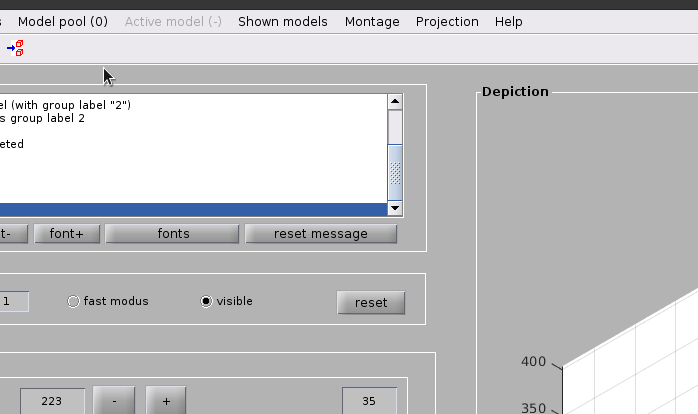
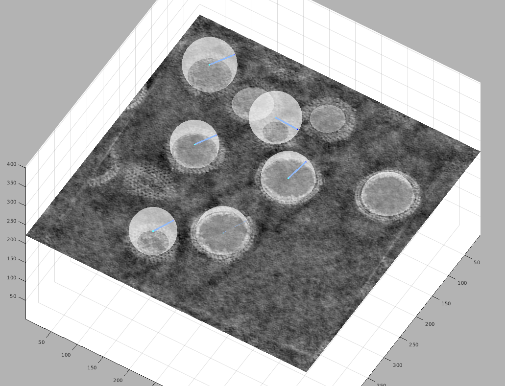

Spherical vesicle picking
Contents
Spherical vesicle picking#
Overview#
This mini-tutorial will show you how to quickly and easily generate an oversampled set of positions
and orientations on a spherical supporting geometry (such as a vesicle) in Dynamo
{kind=link}
We start from a Dynamo catalogue containing the tomograms with vesicles we want to pick.
Motivation#
Vesicle models in Dynamo are spheres or ellipsoids fit to a point cloud,
this is robust but increases the time spent on annotation.
Spheres are uniquely defined by a center point and a radius.
Center and edge points of a vesicle in a tomogram are easily annotated using the dipoleSet model type.
Tomogram annotation#
General approach#
Spheres can be completely defined by only two values, their centre point and their radius. We will
Create a
dipoleSetmodel in each tomogramConvert these
dipoleSetmodels into oversampledvesiclemodels
Using the dipoleSet model let’s us quickly define a center and an edge point for many spherical objects
Create a dipoleSet model#
dtmslice controls
If you haven’t used dtmslice before, get familiar by reading this page and playing with it for five minutes.
Generating dipoleSets can be done with three simple shortcuts:
cto set a center point for the current dipolento set a north point for the current dipoleEnterto save the current dipole and move to the next one
Open your tomogram in dtmslice from the dcm (Dynamo catalogue manager) GUI:
View volume -> Full tomogram file in tomoslice
Create a dipoleSet model from the menu:
Model pool -> Create new model in pool (choose type) -> Oriented particles (dipole set)

Picking dipoles#
Move the slice in the tomogram and roughly pick the center point of your sphere by moving the cursor to that point and pressing c.
Then, move the cursor to a point on the surface of the same vescicle and press n (north) to define an edge point.
A surface rendering of the defined sphere will appear; move the slice and look at the object from different orientations to make sure that the sphere matches your object well. When satisfied, hit Enter to move to the next vesicle
Tip
Use the x, y and z keys to change the orientation of the current slice

Once all the objects in a tomogram are picked, save the model by clicking on Active Model -> Save active model into catalogue (disk) or clicking the floppy disk icon in the menu bar.
Close the tomoslice window and repeat this process for each tomogram in your dataset.
Note
If Dynamo asks what to do with the model in pool memory and you already saved the model, choose to delete it. Dynamo may show some elements of the previous dipoleSet model when opening a new tomogram. This is a visualisation bug, and does not affect the creation of a new model.
Convert dipoleSet models into oversampled Vesicle models#
Once all the dipole models are picked, we can convert them into oversampled Vesicle models. For this, we will use the script dipoles2vesicles.m. The function generates a Dynamo Vescicle model for every dipole in each dipoleSet model in a catalogue.
For example, to generate the Vesicle models from a catalogue called catalogue with an expected inter-particle distance of 7.5px we would run the following command from the folder containing the catalogue:
dipoles2vesicles('warp_catalogue', 7.5)
function dipoles2vesicles(catalogue_name, distance_between_particles)
%%% to be run in the folder which holds your catalogue
%%%
%%% catalogue name - name of catalogue containing your dipoleSet models
%%% distance_between_particles - expected distance between particles in px
%%% (output points will be oversampled relative to this value)
%%%
%%% if you want to restart - !rm */*/*/*/*rawVesicle*.omd
p = [catalogue_name,'/tomograms/*/models/*.omd'];
model_files = dir(p);
for model_idx = 1:length(model_files)
current_file = model_files(model_idx)
model_file = fullfile(current_file.folder, current_file.name)
fprintf('Now reading %s\n', model_file);
vesicles_from_dipoles(model_file, distance_between_particles)
end
end
function vesicles_from_dipoles(model_file, expected_inter_particle_distance)
ds = dread(model_file);
% checks the number of individual dipoles
disp(sprintf('Found %d dipoles in the set',length(ds.dipoles)));
% loops on all the dipoles present in the set
for i=1:length(ds.dipoles);
% selects the i-th individual dipole in the set
dipole = ds.dipoles{i};
% creates a vesicle model
v = dmodels.vesicle();
% prepares a name for each individual dipole
v.name = sprintf('%s_rawVesicle_%d',ds.name,i);
% links the created model with the catalogued volume
% of the dipole set module
v.cvolume = ds.cvolume;
% initiates the vesicle model
v.center = dipole.center;
v.radius = norm(dipole.center - dipole.north);
% add in info about average distance between particle positions on
% surface
v.separation = expected_inter_particle_distance / 1.5;
v.updateCrop();
% saves the model back into the catalogue
v.saveInCatalogue();
end
end